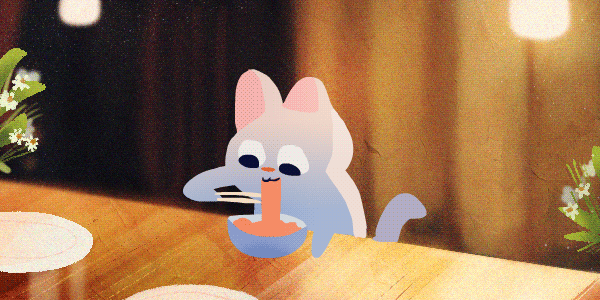

Stardew Valley - 68 hours / Animal Crossing New Horizon - +100 hours
Pretty good if you need to calm down or take some time to yourself with your things.
In general, I read a bit of everything, action manga and romance novels are my favourite.
My top 5 list from "best to worst" would be:
I have dedicated many hours of my life to playing video games, some of which have changed my perspective on the way I see things and others I have not been able to finish because they were so bad. Still, the experiences I have had with them have helped me to be critical and not spend money like crazy as well. Below I will put some reviews of my favorites:
Pretty good if you need to calm down or take some time to yourself with your things.
It was hard for me to figure out how to play properly, but it's pretty cool and I love the character customization.
It's epic, but it's hard to find your playstyle without getting banned on Twitter or dying 20 times because of an NPC.
As you can see in the image below, I really like Japanese food, one of the best dishes I have ever eaten has been takoyaki and any kind of sushi and yakisoba.
